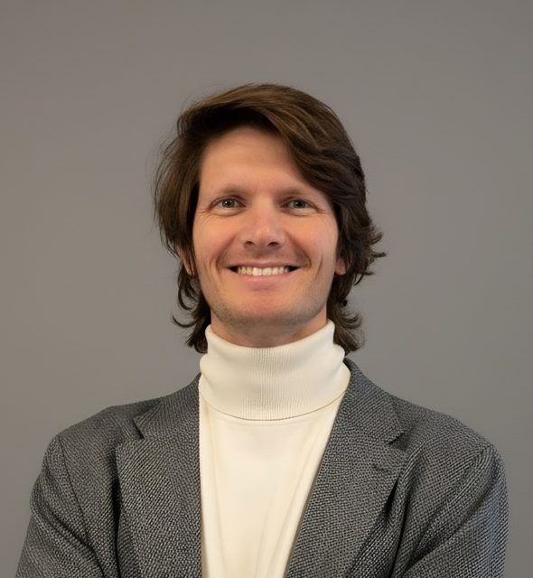
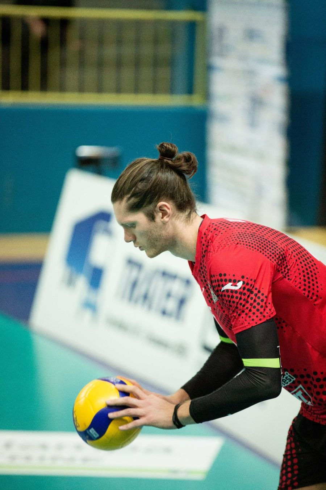
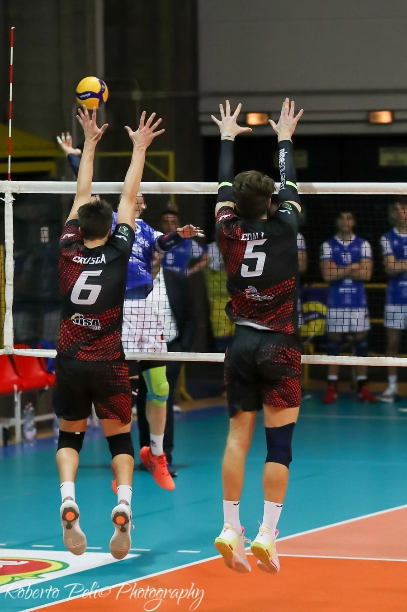
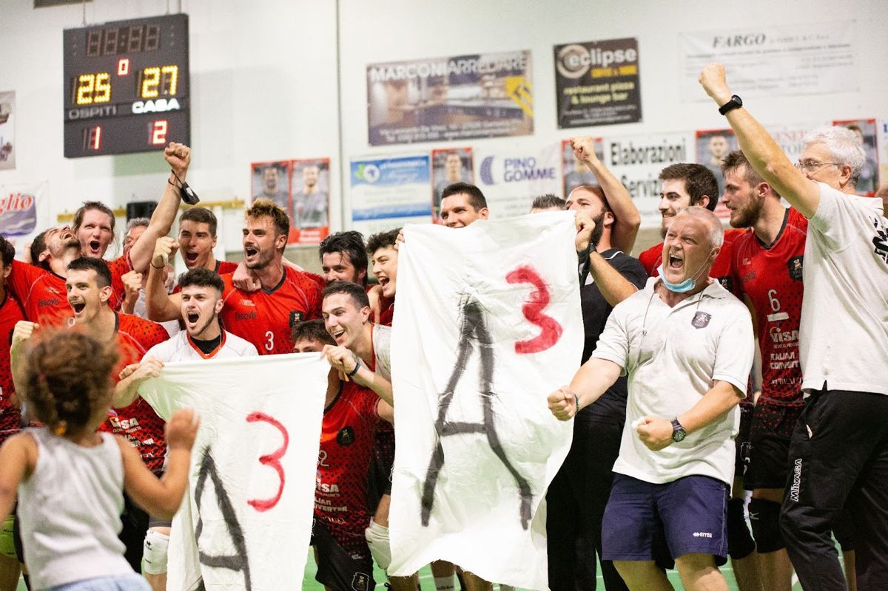

Andrea
Coali
Applied economist. I am the Chief Research Scientist at Cerved Group (ION Group) and a Research Fellow at the ION Management Science Lab, SDA Bocconi.
At Cerved I lead the research function, from economic studies on Italian firms to the predictive models used in the group's products. My academic work uses randomised field experiments to study decision-making under uncertainty and has appeared in Strategic Management Journal, Organization Science and Research Policy. I hold a PhD from Bocconi University and previously worked in the Economics Department of the European Investment Bank.

What I work on
Econometrics and experiments
Randomised controlled trials, difference-in-differences, matching and staggered-adoption designs, used to establish what causes an outcome, in field research and inside a company.
Economic analysis
Studies of firms, investment, productivity and digitalisation, from the European Investment Bank's Investment Report to Cerved's research on Italian small and medium enterprises.
Machine learning and generative AI
Predictive models and AI-based tools that run in live commercial products, built with teams of data scientists and product managers.
Research
-
2026
Entrepreneurship training and entrepreneurs' perceptions of ability: a randomized control trial in Tanzania
Bacco, Coali and Wormald, Strategic Management Journal
In a field experiment with 151 Tanzanian entrepreneurs, training in a theory-and-evidence-based approach to decisions produced a larger and more persistent increase in self-perceived ability than an evidence-only approach.
William F. Glueck Best Paper Award, Academy of Management 2023 -
2025
Does a theory-of-value add value? Evidence from a randomized control trial with Tanzanian entrepreneurs
Agarwal, Bacco, Camuffo, Coali, Gambardella et al., Organization Science
Agribusiness entrepreneurs trained to build a theory of value before testing it achieved higher economic performance, because they made more coordinated changes to both core and operational parts of their business models.
-
2024
Scientific decision-making, project selection and longer-term outcomes
Coali, Gambardella and Novelli, Research Policy
Across two randomised trials with 382 entrepreneurs, those trained in a scientific approach dropped weak projects earlier because they judged project value more accurately. Over five years they generated more ideas and launched more ventures.
-
2024
A scientific approach to decision-making: key tools and design principles
Coali, Novelli, Sirigiri and Spina, Journal of Business Venturing Design
A practical account of the scientific approach to decisions: tools for theory building and evidence gathering, and design principles for developing new ones.
-
2026
Introducing causal reasoning into entrepreneurial pedagogy and practice
Coali et al., in Bayesian Entrepreneurship, MIT Press
Book chapter on how causal reasoning can be taught to entrepreneurs and built into the way they make decisions.
Working papers, policy and reports
- Hacking culture: does entrepreneurship training make entrepreneurs better cultural operators? With F. Bacco. Working paper; EGOS Best Paper Award nomination, 2023.
- Investment Report 2018 and 2023, European Investment Bank. Contributing author, chapters on digitalisation and innovation.
- EIB Group survey on investment and investment finance: a technical note on data quality. Brutscher, Coali, Delanote and Harasztosi, EIB Working Paper 2020/08.
- Employment, productivity and import shocks: evidence from the European manufacturing industry. Altomonte and Coali, EU MICROPROD (Horizon 2020), 2020.
- Management Science Reproducibility Collaboration. Member of the team reproducing published studies for Fišar et al. (2023), Management Science.
Talks, media and writing
-
EssayMarch 2026
AI and democracy: the flattening of human leverage
LinkedIn
AI is beginning to automate judgment, not just tasks. The essay looks at what compressing the value of mid-level skills means for the middle class and for democratic institutions.
-
TalkNovember 2025
Trasformare i dati in decisioni, non in complessità
la Repubblica, A&F Live "Connettere il futuro", Milan (video)
On the digitalisation of Italian firms: when data is abundant, what matters is having a method to manage, interpret and select it.
-
MediaApril 2025
"This is how Galileo helps companies innovate"
Il Sole 24 Ore
Coverage of the Bocconi research on the scientific approach to entrepreneurial decisions, which I co-authored with Alfonso Gambardella and Arnaldo Camuffo.
-
InterviewMarch 2025
Enterprise is not just intuition: the science that increases profits
Bocconi University
On our Organization Science study: Tanzanian entrepreneurs who built a theory before testing earned higher revenues and profits, and changed their business models in a more coordinated way.
-
ArticleAugust 2024
The power of theories for decision-making
viaSarfatti25, Bocconi University
An account of more than fifteen field experiments with entrepreneurs: developing a theory before experimenting leads to better project selection and higher performance under uncertainty.
-
PolicyJuly 2020
EU recovery plans should fund the COVID-19 battles to come; not be used to nurse old wounds
Bruegel, with Carlo Altomonte and Gianmarco Ottaviano
On how EU recovery funds should be allocated after the pandemic.
Programmes for founders
IdeaBooster Lab
Co-created the curriculum of Bocconi's pre-acceleration programme (six modules, 24 hours of training) and ran cohorts with embedded experimental designs in Italy, the Netherlands, Spain, the UK and Colombia, 2018 to 2023.
SUGECO AgriFood Entrepreneurship Initiative
A business development programme for young agricultural entrepreneurs in Tanzania, run by Bocconi University, the University of Maryland and Sokoine University of Agriculture with SUGECO. I designed and ran its randomised trials with more than 150 ventures.
IdeaBooster Lab Demo Day jury
Jury member for the finalists of the 2026 edition, in September 2026. The cohort included 120 startups and 150 founders from more than 30 countries.
Experience
Chief Research Scientist, Cerved Group (ION Group), Milan2023 to present
- Set the group's scientific research agenda, reporting directly to the Group Owner and CEO, and define its research standards.
- Responsible for the group's flagship studies, including its report on Italian SMEs.
- Built proprietary models used in live commercial products; one improved targeting precision 6.3 times at a major banking institution.
- Lead cross-functional teams of economists, data scientists and product managers, working directly with clients.
- Founded the firm's internal research community and a twice-yearly seminar series with more than 500 participants and speakers from MIT, LBS, LSE, Oxford, Bocconi and Google DeepMind.
Research Fellow, ION Management Science Lab, SDA Bocconi2023 to present
- Causal reasoning, entrepreneurship and innovation management.
PhD Researcher and Lecturer, Bocconi University, Milan2018 to 2023
- Randomised controlled trials with more than 150 ventures in Tanzania and pre-acceleration programmes in six countries.
- Taught Business Analytics, Innovation Management and Econometrics to more than 150 students a year in BSc, MSc and Executive programmes.
Economist (Consultant), European Investment Bank, Luxembourg2017 to 2018
- Economics Department: research on digitalisation and innovation, and data management for the EIB Group Investment Survey.
Education, Bocconi University and University of TrentoPhD 2023
- PhD in Business Administration and Management, Bocconi University, cum laude, 2023.
- MSc in Economics and Social Sciences, Bocconi University, cum laude, with an exchange at the Stockholm School of Economics, 2017.
- BSc in International Studies, University of Trento, cum laude, 2015.
Appointments, Fondazione Bruno Kessler and Nova Talent2025 to present
- External tenure-track mentor, Fondazione Bruno Kessler (FBK), Trento, since 2026.
- Selected member, Nova Talent, since 2025.
Volleyball



Photos: Roberto Poli Photography
I played volleyball from 2006 to 2025, two seasons of them in Serie A1, and kept playing through my degrees, my years abroad and my work.
- 2006Youth teams of Trentino Volley
- 2010–11Italian youth champion with Trentino Volley
- Serie A1Two seasons, with Altotevere San Giustino and Verona Volley
- Serie BDuring my MSc at Bocconi, and in Stockholm during the exchange
- 2017–18Luxembourg national champion with Fentange, while at the European Investment Bank
- 2020–21Serie B champion with Volley Garlasco, then Serie A3 in 2021–22
- 2022–25Captain of Desio Volley Brianza, Serie B
In the press: "La doppia vita di Andrea Coali: ricercatore universitario e pallavolista in Serie A", Volleynews, April 2022.